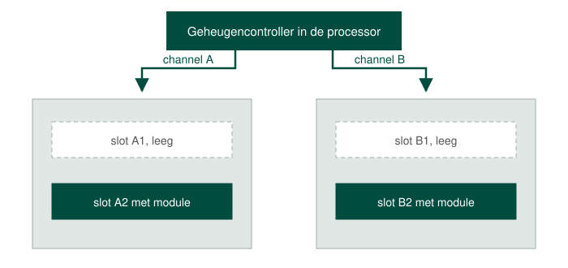
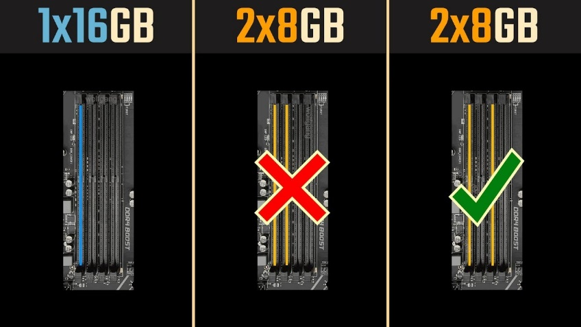

Als je het labo Assemblage + BIOS/UEFI al hebt voltooid heb je misschien gemerkt dat je meerdere RAM slots had op het moederbord. Je hebt je misschien afgevraagd als je je DIMM module in om het even welk slot mocht steken. Of waarom er verschillende kleuren werden gebruikt op het moederbord of wat je moet doen als je meerdere DIMM modules hebt…
Het antwoord op die vragen hangt er vanaf als je een moederbord hebt dat single, dual of quad channel ondersteunt. Bij single channel maakt het allemaal niet veel uit. In dat geval lees je best op het moederbord welk het eerste slot is en dan plug je daar je module in.
Bij dual en quad channel maakt het wel uit. Een channel is een eigen verbinding tussen de geheugencontroller in de processor en een groep sloten. Een moederbord dat dual channel ondersteunt heeft er twee, en een dat quad channel ondersteunt vier. Bij vier sloten en dual channel horen er dus telkens twee sloten bij hetzelfde channel.

Als je één DIMM module hebt plug je ze in het eerste slot. Heb je er twee dan doe je er goed aan om ze in twee sloten van een verschillend channel te steken.
De reden hiervoor is dat je dan parallel kan lezen en schrijven. Staan ze allebei in hetzelfde channel, dan loopt al het verkeer over die ene verbinding en heb je van het tweede channel niets. Bij quad channel geldt hetzelfde met vier modules: een per channel.
Welk fysiek slot bij welk channel hoort, verschilt van moederbord tot moederbord en staat in de handleiding. Daar dienen ook die kleuren voor waar je je in het labo misschien over verwonderde: het bord duidt met de kleur van de sloten aan welke twee je samen moet gebruiken.

Verder is het een goed idee om in ieder slot RAM modules te stoppen van hetzelfde type. We bedoelen hiermee hetzelfde merk, dezelfde capaciteit en dezelfde kloksnelheid.